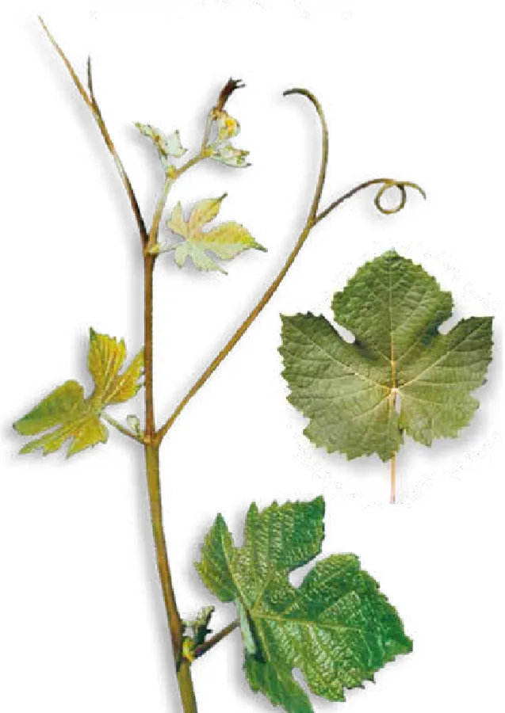

Chapter 3 · The Portuguese grape varieties
Touriga Nacional (R)
Origin:
Northern Portugal. Classified by Lobo (1790) in the Douro and sub-regions of Beira Interior. Characterised by Fonsecca (1790); with greater expansion: Initially, Dão and Douro. In the last 20 years, in all regions of the country. Internationally established in Spain, South Africa, Australia (39 ha), California, Brazil and France.
Wine characteristics:
Very high quality, pilot variety. “The aroma is soft, round and warm, reminiscent of dark red berries, almost black, very ripe, with some floral passages predominantly violet, showing in good years an excellent sweet perfume, similar to cistus.” Almeida, 1990/98).
Regional classification:
DOC quality wine: Porto, Douro, Távora-Varosa, Bairrada, Dão, Beira Interior (all sub-regions), Óbidos, Alenquer, Arruda, Torres Vedras, Lagos, Lagoa, Tavira.
IPR wine: Valpaços, Planalto Mirandês.
Regional wine: Minho, Trás-os-Montes, all sub-regions of Beira Interior, Estremadura, Tejo, Terras do Sado, Alentejo, Algarve.

Morphology:
Young shoot (form of tip): Open, with a crimson edge and a medium density of prostrate hairs.
Young leaf: Green with coppery tones, medium density of prostrate hairs on lower side of blade.
Flower: Hermaphrodite.
Shoot: Striated red, with slightly reddish buds.
Adult leaf: Small, pentagonal, with five lobes; mediumgreen, flat, bubbly limb; lower page with a medium density of prostrate hairs and erect hairs; short, straight teeth; open, V-shaped petiolar sinus, open, U-shaped lateral sinuses.
Bunch: Small, cylindrical-conical, moderately compact, medium length peduncle.
Berry: Slightly flattened, medium blue-black colour; medium-thick skin, soft flesh.
Colour: Dark brown.
Phenology:
Bud burst: Early, 2 days after Castelão.
Flowering: Early, at the same time as Castelão.
Colour: Medium season, 2 days after Castelão.
Ripening: Mid-season, one week after Castelão. (Magalhães, 2006, personal communication: in the Douro, late ripening, usually among the last to be harvested, in order to achieve the appropriate phenolic ripeness.
Vegetative and viticultural potential:
Vigour: High.
Shoot attitude: Lying down.
Fertility index: Very high.
Yield: With traditional material, very low (3-5 t/ha); with clones, medium to high (8-15 t/ha). RNSV values: 0.88 kg/ pl (average of at least 40 cultivars, recorded in Vila Nova de Foz Côa over 4 years).
Yield consistency (different years and locations): High in clonal materials.
Homogeneity of production (between plants): High.
Winkler Index (sum of active temperatures): 1,610 h above 10° C with a yield of 11 t/ha (Montemor-o-Novo). Despite the high thermal value, the variety matures well in warm areas due to its resistance to rot and oxidation.
Abiotic sensitivity: Magnesium deficiency in certain situations, drought scald.
Cryptogamic sensitivity: Slightly sensitive to mildew and powdery mildew; sensitive to Phomopsis viticola (Phomopsis cane and leaf spot).
Sensitivity to pests: Low sensitivity to green leafhopper and moth.
Bunch size: Small and some medium (95-250 g).
Bunch compactness: Medium compact.
Berry: Small (0.9-1.8 g), varies according to clone and environment, difficult to detach.
Skin: Thick.
N.º of seeds: Medium-high (1.2–2.7 per berry)
Training system: It adapts well to any training system, even with short pruning, as the yield is always satisfactory. Due to its erect size, it is easy to manage in green (mechanical pruning).
Favourable soil for quality: Avoid very fertile, deep and humid soils, which compromise the alcoholic strength.
Favourable climate: Preferably at low altitudes with good exposure, dry and warm to the South, SW and West quadrants, at an elevation of 300 m, as it withstands strong radiation well.
Leaf blight: Less sensitive to leaf blight than Touriga Nacional.
Bunch preservation after ripening: Relatively high.
Oenology:
Wine type: Quality wine, dessert wine, rosé wine.
Potential alcohol content: Medium (12–14% vol.); Low in humid zones. (RNSV statistical value: 11.35% vol. (Average of at least 40 clones in Tabuaço over 5 years).
Natural acidity of must: Medium (3.5– 4.5 g/l tartaric acid). RNSV statistical value: 3.94 g/l (Average of at least 40 clones in Tabuaço over 5 years).

Total anthocyanins: RNSV statistical value: 726.67 mg/l (Average of at least 40 clones in Tabuaço over 5 years).
Total phenols index (at 280 nm) of must: 78.8. RNSV statistical value: 31.33 (Average of at least 40 clones in Tabuaço over 5 years).
Risk of oxidation of must: High.
Colour intensity of wine: 5.8–8.15.
Wine colour tonality: 0.66–0.73. Light reddish, somewhat brownish.
Tannins: Not analysed.
Total polyphenol index (at 280 nm): 22–25.
Risk of oxidation of wine: Tendency towards slight oxidation of wine, therefore necessitating the use of antioxidants (N. Almeida). Other authors (Centro de Estudos da Régua) mention a slightly lower risk.
Aromatic profile: (As analysed in the Douro in 2003.) Total concentration of free terpenoids (responsible for floral aromas) is 248 μg/l.
Ageing potential: Generally good, particularly well suited to barrel ageing.